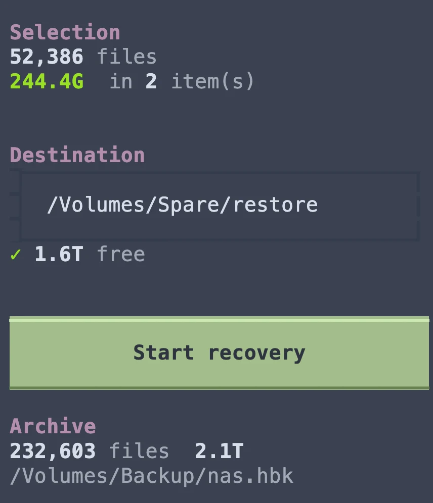

Your backup, without the NAS.
hbkit reads Synology Hyper Backup archives directly, on a Mac or a Linux machine. Point it at a drive or a bucket, browse the backup, and restore what you need. Every chunk is checked against the archive's own checksums on the way out.
brew install YordiLorenzo/tap/hbkit

Reads archives on
- External and USB drives
- Mounted NAS shares
- S3-compatible buckets
- Cloudflare R2
- Backblaze B2
Made for the day the NAS is gone
Synology's Hyper Backup Explorer is a desktop app with no command line, it runs only on x86 under Linux, and it struggles with large archives. When the NAS has died and the backup is all you have left, you want something you can point at a drive, script and trust.
Safe by design
It won't hand you a broken file
-
Checked on the way out
Every chunk is checked against the MD5 and CRC32 stored in the archive. The worst case is a loud failure that names the file, never a file that is quietly wrong.
-
Read-only
hbkit never writes to the archive. Point it at the original drive, a copy, or a bucket.
-
Resumable and crash-safe
Each file is written to a
.partfile and renamed when it is complete, so a stopped run never leaves a cut-off file behind. Run the same command again and finished files are skipped. -
The original layout
Files come back under their share and original path, with their original modification times. Synology's thumbnail and metadata folders stay out of your restore.
Before you restore
Find out first if it will work
hbk doctor reads the archive's layout, then proves it can be recovered: it rebuilds a sample of real files, from the oldest to the newest, and checks every chunk.
- A wrong password is rejected before any data is read.
- A layout hbkit doesn't know is refused, never guessed.
- On an encrypted archive, it shows how many backup versions' keys it found and used.
$ hbk /Volumes/Backup doctor archive : /Volumes/Backup/nas.hbk task : Nightly backup chunk codec : lz4 encrypted : yes (unlocked) data keys : 7 chunk_index record : 29 B (v3) bucket index record : 32 B (md5+crc32) shares : documents, homes, music, photo, video data keys used : 5 of 7 by the sample PASS password unlocks the archive PASS virtual_file layout known (56 B) PASS chunk_index layout known (29 B) PASS bucket layout known (32 B) PASS rebuilt 50 sampled files, all chunks verified VERDICT: recoverable. Sampled files rebuilt byte-exact and checksum-verified.
Browse
Tick folders, then restore
hbk-tui shows the whole backup as a tree, with each folder's size and file count. Tick what you want, choose where it goes, and press r.
- It warns you before you start if the selection won't fit.
- While it runs: live throughput, time left, the files it just finished, and a log of any failures.
- The file list is cached per archive. After the first open, a backup of 1.1 million files opens instantly.

Cloud copies
Restore straight from a bucket
Mount the bucket with rclone and point hbkit at it. hbk mount sets the rclone options that matter and loads the folder listings up front, so the wait happens once, at the start. Your cloud keys stay in rclone's own config.
- Browsing and search use a local index, with no network at all.
- Checksums cost nothing here: decompressing and checking took 0.7% of the time.
- A copy on a local disk is still much faster. Try one small folder first.
A 3 TB archive in Cloudflare R2
Default rclone settings, then with hbk mount.
- Mount and load the folder listings about 12 minutes before 16 s
- Open the archive 9 min 21 s before 1.8 s
- Restore a 10 KB file 584 s before 11 s
Command line
Or script the whole thing
Every command takes a pattern over the archive's own paths, which start with the share name. Output keeps the folder tree and the original dates.
-jsets how many worker processes run at once. Use 16 on a network mount.--strictre-checks the recorded checksums when resuming, so a file of the right size with the wrong content is caught.- Plain output and a non-zero exit code on any failure, for cron jobs and scripts.
# restore a folder, keeping the tree and dates $ hbk /Volumes/Backup get "/photo/2023/*" ~/restore # check everything, write nothing $ hbk /Volumes/Backup verify "*" -j 16 # find a file by name $ hbk /Volumes/Backup list invoice # encrypted? it asks for the password, or set HBK_PASSWORD $ hbk /Volumes/Backup info
What it works with
hbkit has been checked byte for byte against a handful of real archives, and doctor exists so you can check yours in seconds, not halfway through a restore.
Archives
- Hyper Backup on DSM 7, seen working with versions 4.1.2 and 4.2.2
- LZ4-compressed chunks
- Client-side encryption, unlocked with the password
- Many backup versions; hbkit reads the newest
Not yet: older RSA-encrypted archives, unlocking with the key file, and files stored by whole-file dedup (1 in 501,278 in the reference archive).
Where it lives
- Any folder your computer can open: an internal or USB disk, or a mounted NAS share
- S3-compatible buckets such as Amazon S3, Cloudflare R2 and Backblaze B2, through an rclone mount
Computers
- macOS, Apple Silicon and Intel
- Linux
- Python 3.10 or newer, and liblz4
Not tested: restoring on Windows. The package installs and runs there.
Ways to install
- Homebrew, on macOS and Linux
- pip or pipx, from PyPI
- An Arch PKGBUILD and a Nix package, in the repository
Install
One command to install, one to check the archive, one to restore.
-
Install hbkit
$ brew install YordiLorenzo/tap/hbkitHomebrew installs liblz4 with it. With pip or pipx, run
pip install hbkitand install liblz4 yourself:brew install lz4,apt install liblz4-1orpacman -S lz4. -
Check the archive
$ hbk /Volumes/Backup doctorGive it the
.hbkfolder, or any drive or folder that holds one. For an encrypted archive, add-pand the password, or setHBK_PASSWORD. -
Restore
$ hbk-tui /Volumes/BackupOr from the command line:
$ hbk /Volumes/Backup get "/photo/*" ~/restoreIf it stops, run the same command again to carry on.
Every command, network mounts and performance tuning are in the README.
Questions
Anything else? The README goes deeper, and you can always open an issue.
Do I need a Synology NAS or account?
No. hbkit reads the archive's files directly. It doesn't need a NAS, Synology software, a Synology account or an internet connection.
Can it damage my backup?
No. hbkit opens the archive read-only and never writes to it. Restored files go only to the destination you choose.
My backup is encrypted. Will it work?
Yes, with the password. hbkit checks the password against the public key stored in the archive, so a wrong one is rejected straight away. Older archives encrypted with RSA, and unlocking with the exported key file, aren't supported yet.
Can I restore straight from S3, R2 or B2?
Yes, through an rclone mount, and hbk mount sets it up for you. A restore reads many small pieces, each one a trip over the network, so it is much slower than a local disk. If you can, copy the archive down first.
How fast is it?
Usually as fast as the disk allows. From a USB hard disk that reads 92 MB/s at best, a restore ran at 58 MB/s. From Cloudflare R2 it reached about 9.5 MB/s with 16 workers.
Can it restore an older backup version?
Not yet. hbkit always reads the newest version in the archive.
What if doctor fails on my archive?
Please open an issue and paste the output. The last two fixes both came from people whose archive wouldn't fully restore: one had gaps in its index files, the other was an encrypted archive with seven backup versions.
Is hbkit made by Synology?
No. It is an independent open source project. The format was worked out from real archives, and is written up in FORMAT.md for anyone who wants to build on it.
Get your files back
Free and open source, for macOS and Linux. Run doctor first, then restore what you need.
brew install YordiLorenzo/tap/hbkit
Got an archive it can't read?
Every Synology setup is a little different, and each new archive teaches hbkit something. If doctor doesn't pass on yours, the output is enough to start from.